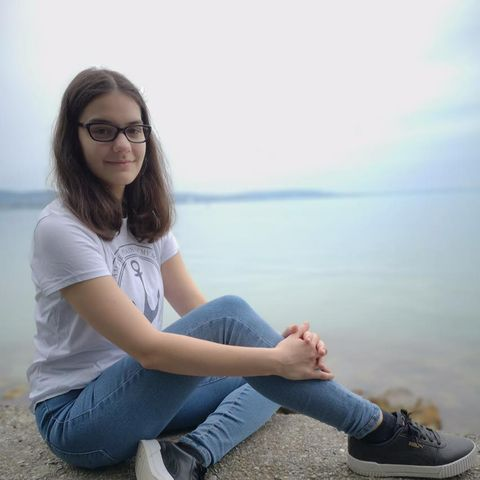

Rólam
Elsőéves gépészmérnök hallgató vagyok a Budapesti Műszaki- és Gazdaságtudományi Egyetemen.
Kiskorom óta szívesen töltöm az időmet vízközelben, valamint kirándulással és fotózással. Az utazásaim során készült képek közül osztok meg néhányat itt.